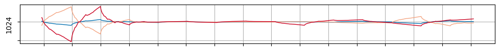
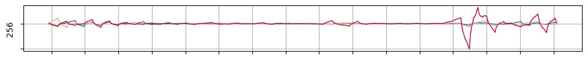
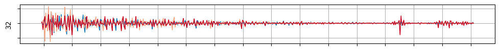

The autoreload extension is already loaded. To reload it, use:
%reload_ext autoreloadThe autoreload extension is already loaded. To reload it, use:
%reload_ext autoreloadimport pandas as pd
import matplotlib.pyplot as plt
import fastcore.all as fc
from pathlib import Path
from sklearn.pipeline import Pipeline
import numpy as np
from spik.loading import load_mir, load_nir
from spik.preprocessing import (MeanCenter, MeanReplicates, DWTFiltering, DiffFromUnspiked,
wn_to_wl, wl_to_wn)deep_blue, blue, orange, red = '#0571b0', '#92c5de', '#f4a582', '#ca0020'def plot_spectra(X, wavenumbers, colors, labels, title,
xlabel='Wavenumber ($cm^{-1}$)', ylabel='Absorbance',
spectra_type='MIR', figsize=(12, 5), locator=250, lw=1,
tight_layout=False):
fig, ax = plt.subplots(figsize=figsize)
X = X[:, :len(wavenumbers)]
for i in range(X.shape[0]):
ax.plot(wavenumbers, X[i], color=colors[i], label=labels[i], lw=lw)
ax.xaxis.set_major_locator(plt.MultipleLocator(locator))
ax.grid(True)
ax.invert_xaxis()
ax.set_xlabel(xlabel)
ax.set_ylabel(ylabel)
ax.set_title(title)
if tight_layout:
ax.set_xticklabels([])
ax.set_yticklabels([])
else:
ax.legend()def load_data(spectra_type):
if spectra_type == 'MIR':
fname = Path('../../_data/mir')
X, wavenumbers, names = load_mir(fname)
else:
fname = Path('../../_data/nir/2023-12-8 _FT-NIR-K-spiked soil.xlsx')
X, wavenumbers, names = load_nir(fname)
return X, wavenumbers, namesspectra_type = 'MIR'
X, wavenumbers, names = load_data(spectra_type)
for smp_name in ['TM4.1', 'LUI', 'SPA1']:
pipe = Pipeline([
('mean center replicates', MeanReplicates(smp_name, names))
])
plot_spectra(pipe.fit_transform(X), wavenumbers,
[deep_blue, blue, orange, red], ['Original', '0.1', '1', '10'],
f'Soil name: {smp_name}', figsize=(12, 3))spectra_type = 'NIR'
X, wavenumbers, names = load_data(spectra_type)
print('X shape: ', X.shape, 'Wavenumbers shape: ', wavenumbers.shape)
print('First 10 wavenumbers: ', wavenumbers[:10])
print('First 5 names: ', names[:5])X shape: (24, 949) Wavenumbers shape: (949,)
First 10 wavenumbers: [11536 11528 11520 11512 11504 11496 11488 11480 11472 11464]
First 5 names: ['LUI-0-0' 'LUI-0-1' 'LUI-1-0' 'LUI-1-1' 'LUI-2-0']for smp_name in ['TM4.1', 'LUI', 'SPA1']:
pipe = Pipeline([
('mean center replicates', MeanReplicates(smp_name, names))
])
plot_spectra(pipe.fit_transform(X), wavenumbers,
[deep_blue, blue, orange, red], ['Original', '0.1', '1', '10'],
f'Soil name: {smp_name}', figsize=(12, 3), locator=500)spectra_type = 'MIR'
X, wavenumbers, names = load_data(spectra_type)
for smp_name in ['TM4.1', 'LUI', 'SPA1']:
pipe = Pipeline([
('mean center replicates', MeanReplicates(smp_name, names)),
('DWT filtering', DWTFiltering(filtered_levels=[0, -1, -2, -3]))
])
X_sample = pipe.fit_transform(X)
plot_spectra(pipe.fit_transform(X), wavenumbers,
[deep_blue, blue, orange, red], ['Original', '0.1', '1', '10'],
f'Soil name: {smp_name}', figsize=(12, 3))spectra_type = 'NIR'
X, wavenumbers, names = load_data(spectra_type)
for smp_name in ['TM4.1', 'LUI', 'SPA1']:
pipe = Pipeline([
('mean center replicates', MeanReplicates(smp_name, names)),
('DWT filtering', DWTFiltering(filtered_levels=[0, -1, -2, -3]))
])
X_sample = pipe.fit_transform(X)
plot_spectra(pipe.fit_transform(X), wavenumbers,
[deep_blue, blue, orange, red], ['Original', '0.1', '1', '10'],
f'Soil name: {smp_name}', figsize=(12, 3), locator=500)spectra_type = 'MIR'
X, wavenumbers, names = load_data(spectra_type)
for smp_name in ['TM4.1', 'LUI', 'SPA1']:
pipe = Pipeline([
('mean center replicates', MeanReplicates(smp_name, names)),
('DWT filtering', DWTFiltering(filtered_levels=[0, -1, -2, -3])),
('Difference from non manipulated soil', DiffFromUnspiked())
])
X_sample = pipe.fit_transform(X)
plot_spectra(X_sample, wavenumbers,[deep_blue, orange, red],
['0.1', '1', '10'], f'Soil name: {smp_name}', figsize=(12,3))spectra_type = 'NIR'
X, wavenumbers, names = load_data(spectra_type)
for smp_name in ['TM4.1', 'LUI', 'SPA1']:
pipe = Pipeline([
('mean center replicates', MeanReplicates(smp_name, names)),
('DWT filtering', DWTFiltering(filtered_levels=[0, -1, -2, -3])),
('Difference from non manipulated soil', DiffFromUnspiked())
])
X_sample = pipe.fit_transform(X)
plot_spectra(X_sample, wavenumbers,[deep_blue, orange, red],
['0.1', '1', '10'], f'Soil name: {smp_name}', figsize=(12,3), locator=500)# level = 1
# print(f'wavelet support (in wavenumber): {2*2**(10-level)}')
# filtered_levels = [el for i, el in enumerate(range(10)) if i != level]
# print(f'Filtered levels: {filtered_levels}')
spectra_type = 'MIR'
X, wavenumbers, names = load_data(spectra_type)
smp_name = 'SPA1'
levels = range(1, 10)
for level in levels:
filtered_levels = [el for i, el in enumerate(range(10)) if i != level]
pipe = Pipeline([
('mean center replicates', MeanReplicates(smp_name, names)),
('DWT filtering', DWTFiltering(filtered_levels=filtered_levels, verbose=False)),
('Difference from non manipulated soil', DiffFromUnspiked())
])
X_sample = pipe.fit_transform(X)
plot_spectra(X_sample, wavenumbers,[deep_blue, orange, red],
['0.1', '1', '10'],
ylabel=f'{2*2**(10-level)}', xlabel='',
title='', figsize=(12,1), lw=1, tight_layout=True)
# level = 1
# print(f'wavelet support (in wavenumber): {2*2**(10-level)}')
# filtered_levels = [el for i, el in enumerate(range(10)) if i != level]
# print(f'Filtered levels: {filtered_levels}')
spectra_type = 'NIR'
X, wavenumbers, names = load_data(spectra_type)
smp_name = 'SPA1'
levels = range(1, 9)
for level in levels:
# filtered_levels = [el for i, el in enumerate(range(9) if i != level]
filtered_levels = [el for i, el in enumerate(range(9)) if i != level]
pipe = Pipeline([
('mean center replicates', MeanReplicates(smp_name, names)),
('DWT filtering', DWTFiltering(filtered_levels=filtered_levels, verbose=False)),
('Difference from non manipulated soil', DiffFromUnspiked())
])
X_sample = pipe.fit_transform(X)
plot_spectra(X_sample, wavenumbers,[deep_blue, orange, red],
['0.1', '1', '10'],
ylabel=f'{8*2**(9-level)}', xlabel='',
title='', figsize=(12,1), lw=1, tight_layout=True, locator=500)



level = 4
print(f'wavelet support (in wavenumber): {8*2**(9-level)}')
filtered_levels = [el for i, el in enumerate(range(9)) if i != level]
print(f'Filtered levels: {filtered_levels}')
spectra_type = 'NIR'
X, wavenumbers, names = load_data(spectra_type)
for smp_name in ['TM4.1', 'LUI', 'SPA1']:
pipe = Pipeline([
('mean center replicates', MeanReplicates(smp_name, names)),
('DWT filtering', DWTFiltering(wavelet='db2', filtered_levels=filtered_levels, verbose=False)),
('Difference from non manipulated soil', DiffFromUnspiked())
])
X_sample = pipe.fit_transform(X)
plot_spectra(X_sample, wavenumbers,[deep_blue, orange, red],
['0.1', '1', '10'], smp_name, figsize=(12,3), locator=500, lw=1)wavelet support (in wavenumber): 256
Filtered levels: [0, 1, 2, 3, 5, 6, 7, 8]In my paper: - 37003400 cm1: albinet et al. 2022,Viscarra Rossel et al., 2006; Le Guillou et al., 2015). absorption peaks of soil constituents such as calcite, kaolinite, 2:1 type clay minerals, and the features of free water - 1200970 cm1: assigned to SiO stretching (Farmer, 1974) - 30002800 cm1 spectral region (Le Guillou et al., 2015). high organic matter content such as Histosols, Gelisols and Andisols
Based on plots.
MIR: - 1500-1250: (smectite: Rossel et al. 2006) - 1250-1000: - 4000-3500: kaolinite
NIR: - 4000-5000: O-H bonds, in lattice minerals, Kaolinite - 5000-5500: O-H bonds - 7000-7500: O-H bonds, Kaolinite - 10500-11500:
wn_to_wl(1500)6666.666666666667wl_to_wn(2400)4166.666666666667